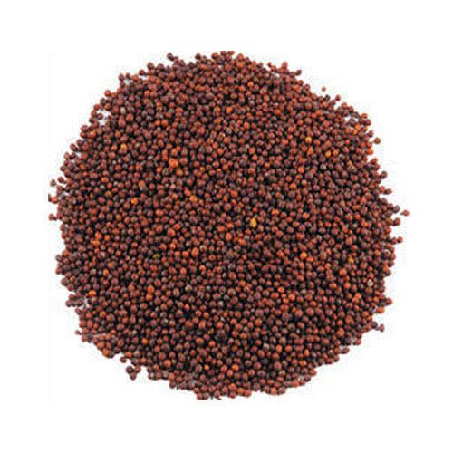

सोयबीन विषयी माहिती

सोयबीन -जमीन
मध्यम काळी पोयट्याची, चांगली निचरा होणारी.
पूर्वमशागत
एक नांगरट, दोन कुळवाच्या पाळ्या देऊन जमीन भुसभुसीत करावी.
सुधारित वाण
जे.एस.३३५, एम.ए.सी.एस.११८८, फुले कल्याणी (डी.एस.२२८), जे.एस.९३०५, के.एस. १०३, फले अग्रणी (केडीएस ३४४)
पेरणी व लागवडीचे अंतर
पेरणी खरीपात जुनच्या पहिल्या पंधरवड्यात वापशावर करावी. पेरणी ४५ X ०.५ सें.मी. (भारी जमीन) किंवा ३० X १० सें.मी.
(मध्यम जमीन) अंतरावर करावी.
बियाणे
सलग पेरणीसाठी ७५-८० किलो प्रति हेक्टर तर टोकण पेरणीसाठी ४५-५० किलो प्रति हेक्टर बियाणे वापरावे.
बीजप्रक्रिया –
बुरशीजन्य रोगांपासून संरक्षण करण्यासाठी प्रति किलो बियाण्यास २.५ ग्रॅम कार्बेन्डेझीम किंवा ५ ग्रॅम ट्रायकोडर्मा
चोळावे. तसेच नत्र स्थिरीकरणासाठी सोयाबीन गटाचे रायझोबियम २५० ग्रॅम अधिक स्फुरद विरघळणारे जीवाणू २५० ग्रॅम प्रति
१० किलो बियाण्यास चोळावे.
आंतरपिके
सोयाबीन अधिक तूर (३:१) या प्रमाणात घ्यावे.
खत मात्रा
भरखते : चांगले कुजलेले शेणखत किंवा कंपोस्ट खत हेक्टरी २५ ते ३० गाड्या वापरावे.
वरखते : सोयाबीन पिकास हेक्टरी ५.० किलो नत्र आणि ७५ किलो स्फुरद पेरणीच्या वेळी द्यावे.
आंतरमशागत
तणांच्या बंदोबस्तासाठी पेरणीच्या वेळी प्रति हेक्टरी पेंडिमेथॅलीन १.० ते १.५ किलो क्रियाशील घटक ६०० ते ७०० लिटर
पाण्यामध्ये मिसळून जमिनीवर फवारावे. पीक उगवणीनंतर १५ ते २० दिवसांनी एक कोळपणी व नंतर खुरपणी करुन शेत तणमुक्त
ठेवावे. अथवा पीक उगवणीनंतर २१ दिवसांनी प्रति हेक्टरी इमॉजिथॅपर क्रियाशील घटक ०.१ ते ०.१५ किलो ५०० ते ६०० लिटर
पाण्यामध्ये मिसळून तणांवर फवारावे.
पाणी व्यवस्थापन
पिकाला फांद्या फुटताना (पेरणीनंतर ३० ते ३५ दिवसांनी), फुलो-यात असतांना (पेरणीनंतर ४५ ते ५० दिवसांनी) पावसाने ताण
दिल्यास पाण्याच्या पाळ्या द्याव्यात.
पीक सरंक्षण
महाराष्ट्रात सोयाबीन पिकास पाने खाणा-या अळ्या, खोड माशी या किंडीचा व तांबेरा या रोगाचा प्रादुर्भाव दिसून येतो.
खोडमाशीच्या प्रादुर्भाव झाल्यास बाल्यावस्थेत रोपाचे एखादे पान कडेने वाळू लागते आणि त्याची एखादी फांदी सुकलेली
आढळते. ब-याचदा ग्रासित रोपांवर जमिनीपासून काही अंतरावर छिद्रेही आढळतात आणि त्यामुळे उत्पादनात १५ टक्केपर्यंत
नुकसान संभवते.
पाने खाणारी स्पोडोप्टेरा किडीची अंडी समुहात घातली जातात. अळ्या सुरवातीस समुहानेच पानावर उपजिविका करतात. या
अवस्थेत पानांचा पापुद्रा शाबूत ठेऊन केवळ त्यातील हरितद्रव्य संपुष्टात आणतात. त्यामुळे हिरवी दिसणारी पाने पांढरट
पडून पारदर्शक होताना दिसतात.
तिसरी कात टाकल्यानंतर अळ्या स्वतंत्ररित्या उपजिविका करण्यासाठी शेतभर पसरतात.
वाढलेले शरीर, वजन व त्यामुळे वाढलेली प्रचंड भुक यामुळे अळ्या आधाशासारख्या पानावर तुटून पडतात व शेंगेतील दाणेही
खाऊ लागतात.
किडीच्या उपद्रवाचा आगाऊ अंदाज घेऊन नुकसान टाळण्यासाठी हेक्टरी ५ स्पोडोलूरचा वापर करण्यात आलेले
फेरोमेन सापळे नियंत्रणासाठी अंडी समुहांचा तसेच समुहाने आढळणा-या अळ्यांचा वेळीच नायनाट केल्यास रासायनिक
किटकनाशकांचा वापर टाळता येतो. रासायनिक किटकनाशकांचा वापर करणे अनिवार्य झाल्यास क्लोरपायरीफॉस २० टक्के २० मिली,
सायपरमेथ्रिन २५ टक्के ४ मिली प्रति १० लिटर पाण्यातून फवारावे.
रोग
तांबेरा या बुरशीजन्य रोगामुळे पानांवर तपकिरी रंगाचे ठिपके येतात व पाने तपकिरी पडतात. आर्द्रतायुक्त हवामान, वारा,
रोपांची जास्त संख्या यामुळे पिकात हवा खेळण्याचे कमी झालेले प्रमाण या बाबी रोगास आमंत्रित करतात. या रोगाने शेंगा
पिवळसर तपकिरी पडतात.
ब-याचवेळा अकाली पानगळ होते. दाण्यांच्या वजनात लक्षणीय घट होते व हेक्टरी उत्पादन घटते.
तांबेरा प्रभावित भागात (सांगली, कोल्हापूर व सातारा) पेरणी शक्यतो १५ मे ते २५ जुनच्या दरम्यान करावी. फुले अग्रणी
कल्याणी सारख्या या रोगास बळी न पडणा-या, जातीचा वापर करावा. प्रोपीकोनझॉल यापैकी एखादे बुरशीनाशकाची फवारणी १
लिटरला १ मिली या प्रमाणात करावी.
पिकाच्या अवस्थेनुसार १-२ फवारण्या १५ दिवसाचे अंतराने गरजेनुसार घ्याव्यात.
काढणी
सोयाबीन शेंगांचा रंग पिवळट तांबुस झाल्यानंतर, जातीच्या पक्वतेच्या ९० ते ११० दिवसांत काढणी करावी. पीक काढणीस उशीर
झाल्यास शेंग फुटण्यास सुरुवात होते.
उत्पादन
सोयाबीन पिकाचे उत्पादन २० ते २५ क्विंटल प्रति हेक्टरी मिळते.